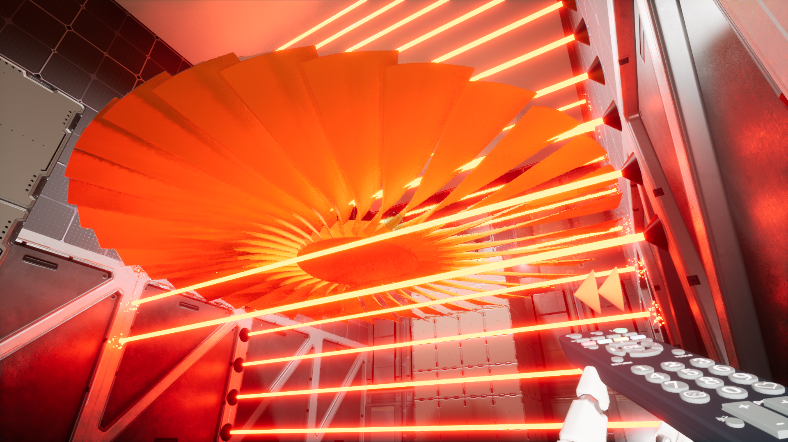

The clock ticks, inexorably.
You wake up in a mysterious futuristic laboratory, after a technician spills his coffee on the wrong keyboard. You soon obtain the ChronoGun, which is able to change the temporal properties of objects. Falling items can be sent back to where they fell from, dangerous blades can be safely stopped, and mechanisms can be sped up for speed and power. You need to escape this facility, and the sooner the better.
Chrono is a puzzle/platformer first-person single-player game. Explore dozens of puzzle rooms where you interact with the temporal properties of objects. Each puzzle contains moving platforms, pistons, lasers, turbines, and more. Puzzles are grouped by level, and each level represents a difficulty increase.
You can try and achieve the fastest time possible for each level. Solve all the puzzles to escape and get to safety!

.